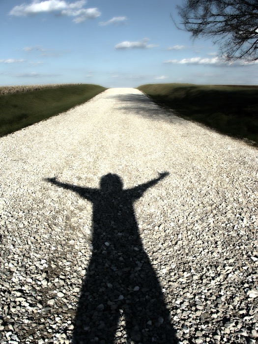
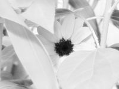
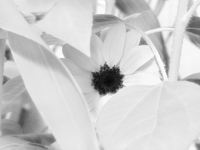

Next Photo
-
Vote
Take It In
Glosoli. There is a vast amazing world around us and we need to stop and enjoy it. In this photo there are many things to take in. The first is the vastness of the world, there is so much space, and the subject is reveling in that thought. The open sky, and open road, both lend themselves to this thought. There is also the thought of the future, our journey. The subject is not moving, but overjoyed just to be on the road. Its obvious that the subject does not care where the end of his journey is, but that he is on one. There is a graduation, from dark to light, as the road travels onward. It relates to the past moving towards the future. There is no hope in the past, only hope in that which is to come. The dreamy, soft look of the photo adds to its appeal to thoughtfulness. -Me
More...
Title: Take It In
Description: Glosoli. There is a vast amazing world around us and we need to stop and enjoy it. In this photo there are many things to take in. The first is the vastness of the world, there is so much space, and the subject is reveling in that thought. The open sky, and open road, both lend themselves to this thought. There is also the thought of the future, our journey. The subject is not moving, but overjoyed just to be on the road. Its obvious that the subject does not care where the end of his journey is, but that he is on one. There is a graduation, from dark to light, as the road travels onward. It relates to the past moving towards the future. There is no hope in the past, only hope in that which is to come. The dreamy, soft look of the photo adds to its appeal to thoughtfulness. -Me
Keywords: hdr future light shadow hope world dreamy soft grassroots experience open
Hidden: n
Date added: Thu Jul 19 01:31:16 CDT 2007
Date taken: Tue Apr 03 18:51:45 CDT 2007
Camera: FinePix S5100 .
Resolution: 2272x1704
Mode: 2
Shutter speed: -297/100
Flash: 16
Exposure time: 80/10
Iso: 64
Metering: 3
Aperture: 500/100
Focal length: 750/100
Artist: NathanielGuy Mahieu
Copyright: 2007 NathanielGuy Mahieu
Views: 613
 
